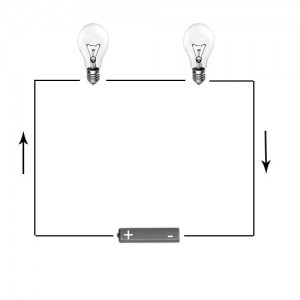

Circuitos eléctricos en serie
En un circuito eléctrico conectado en serie, los dispositivos están conectados secuencialmente, es decir, los receptores se unen de un lado a otro y se pueden integrar todos de manera secuencial; de esta forma, si se desconecta alguno de los receptores los siguientes dejarán de funcionar. La resistencia total del circuito se calcula sumando todas las resistencias de los receptores conectados.

Circuitos eléctricos en paralelo
En los circuitos eléctricos conectados en paralelo, la alimentación de los diferentes dispositivos es la misma para todos, al igual que la salida de sus terminales. En este tipo de circuitos se entrelazan los receptores: por un lado, todas las entradas y por el otro todas las salidas. La tensión de todos los receptores juntos es equivalente a la tensión total del circuito.
Circuitos eléctricos mixtos
En los circuitos eléctricos mixtos podemos encontrar dispositivos conectados en serie o en paralelo. En este tipo de circuitos eléctricos hay que juntar los receptores en serie y en paralelo para calcularlos.